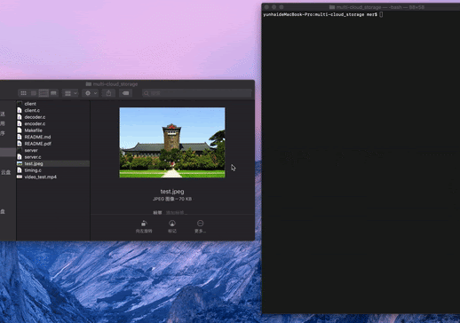
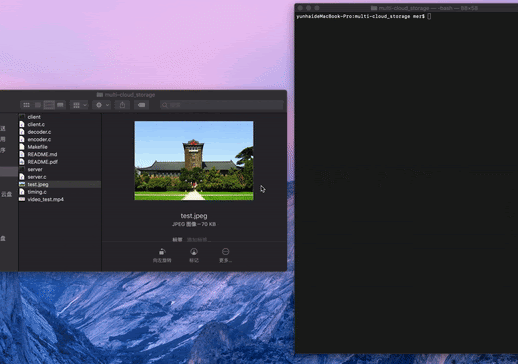

Email: yuf020ucsd.edu
Hi! I'm a masters student in Computer Science at UC San Diego, advised by Prof. Xiaolong Wang. I'm broadly interested in Robotics, Reinforcement Learning, and Computer Vision. I aim to build intelligent systems that are robust and generalizable.
I received my Bachelar's degree with honors from the National Elite Program of Computer Science at Nanjing University, where I worked with Prof. Yang Yu in Leaning And Mining from DatA (LAMDA) Group. I was also fortunate to work with Prof. Kenneth Salisbury at Stanford Artificial Intelligence Lab (SAIL), Prof. Lin Shao and Prof. Xiangyu Yue.
I'm applying for a Ph.D. program starting fall 2024.
Research

Yunhai Feng*, Nicklas Hansen*, Ziyan Xiong*, Chandramouli Rajagopalan, Xiaolong Wang
Proceedings of the 7th Conference on Robot Learning (CoRL), November 2023 Oral presentation
@inproceedings{feng2023finetuning,
title={Finetuning Offline World Models in the Real World},
author={Feng, Yunhai and Hansen, Nicklas and Xiong, Ziyan and Rajagopalan, Chandramouli and Wang, Xiaolong},
booktitle={Proceedings of the 7th Conference on Robot Learning (CoRL)},
year={2023}
}
Jun Lv, Yunhai Feng, Cheng Zhang, Shuang Zhao, Lin Shao*, Cewu Lu*
Proceedings of Robotics: Science and Systems (RSS), July 2023 🏆 Best System Paper Award Finalist
@inproceedings{lv2023sam,
title={SAM-RL: Sensing-Aware Model-Based Reinforcement Learning via Differentiable Physics-Based Simulation and Rendering},
author={Lv, Jun and Feng, Yunhai and Zhang, Cheng and Zhao, Shuang and Shao, Lin and Lu, Cewu},
booktitle={Proceedings of Robotics: Science and Systems (RSS)},
year={2023}
}

Ya Jing*, Xuelin Zhu*, Xingbin Liu*, Qie Sima, Taozheng Yang, Yunhai Feng, Tao Kong
Proceedings of the IEEE/RSJ International Conference on Intelligent Robots and Systems (IROS), October 2023 CoRL 2022 Workshop on Pre-training for Robot Learning, December 2022
@inproceedings{jing2023explore
author={Ya Jing, Xuelin Zhu, Xingbin Liu, Qie Sima, Taozheng Yang, Yunhai Feng, Tao Kong},
title={Exploring Visual Pre-training for Robot Manipulation: Datasets, Models and Methods},
booktitle={2023 IEEE/RSJ International Conference on Intelligent Robots and Systems (IROS)},
year={2023}
}
Shenli Yuan, Lin Shao, Yunhai Feng, Jiatong Sun, Teng Xue, Connor Yako, Jeannette Bohg, Kenneth Salisbury
Projects

 

Teaching
- Teaching Assistant: Problem Solving (IV) (2022 Spring), Nanjing University
- Teaching Assistant: Problem Solving (III) (2021 Fall), Nanjing University
Service
- Conference reviewer: IROS 2023, ICRA 2024
- Journal reviewer: IEEE Robotics and Automation Letters (RA-L)
Awards
- Best System Paper Award Finalist, RSS 2023
- Graduate Excellence Award, 2022
- Special Scholarship for Fundamental Subjects, 2021
- People's Scholarship (first prize), 2021
- National Elite Program Scholarship (first prize), 2020
- National Elite Program Scholarship (specialty prize), 2019